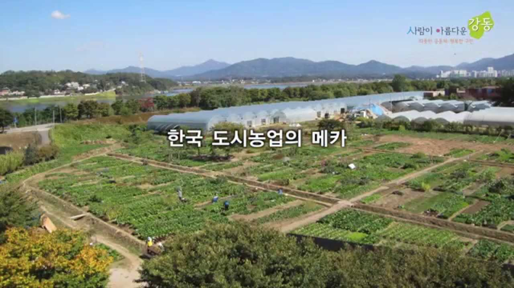

강동구 소개 페이지에 오신 것을 환영합니다!
강동구는
서울시의 최동단에 위치한 자치구입니다.
특징
역사가 길어요.
암사동 빗살무늬 토기
가장 대표적인 빗살무늬 토기 유적인 암사동 빗살무늬 토기가 출토되었을 정도로 오래 전부터 사람이 거주해왔던 도시에요.
자연 친화적인 환경을 자랑해요.
강동구는 도심 속에서도 자연을 쉽게 접할 수 있는 녹지 공간이 풍부해요. 일자산, 길동생태공원, 강동그린웨이 등 주민들이 휴식을 취하고 여가를 즐길 수 있는 공원이 많아 '살기 좋은 도시'로 꼽히며, 도시 농업까지 이루어지고 있어요.
서울 동부를 잇는 교통의 요충지
천호역지하철 5호선, 8호선, 9호선이 관통하여 서울 도심 및 강남 접근성이 매우 뛰어나요. 또한, 수도권제1순환고속도로와 올림픽대로가 인접해 있어 하남, 구리 등 경기 동부권으로 향하는 관문 역할을 하는 교통의 중심지에요.
행정구역 정보
| 법정동 | 행정동 | 면적 | 인구 |
|---|---|---|---|
| 강일동 | 2.80㎢ | 34,605명 | |
| 상일동 | 상일제1동 | 2.66㎢ | 39,239명 |
| 상일제2동 | 1.09㎢ | 13,535명 | |
| 고덕동 | 고덕제1동 | 1.73㎢ | 23,818명 |
| 고덕제2동 | 2.01㎢ | 25,325명 | |
| 명일동 | 명일제1동 | 0.61㎢ | 24,830명 |
| 명일제2동 | 0.97㎢ | 16,843명 | |
| 암사동 | 암사제1동 | 1.02㎢ | 33,194명 |
| 암사제2동 | 1.18㎢ | 14,572명 | |
| 암사제3동 | 2.51㎢ | 17,087명 | |
| 천호동 | 천호제1동 | 0.71㎢ | 25,555명 |
| 천호제2동 | 1.57㎢ | 34,307명 | |
| 천호제3동 | 0.79㎢ | 26,163명 | |
| 성내동 | 성내제1동 | 0.58㎢ | 19,095명 |
| 성내제2동 | 0.67㎢ | 23,833명 | |
| 성내제3동 | 0.71㎢ | 21,777명 | |
| 길동 | 2.17㎢ | 47,553명 | |
| 둔촌동 | 둔촌제1동 | 0.92㎢ | 10,917명 |
| 둔촌제2동 | 0.98㎢ | 24,694명 | |
| 합계 | 24.59㎢ | 499,047명 | |